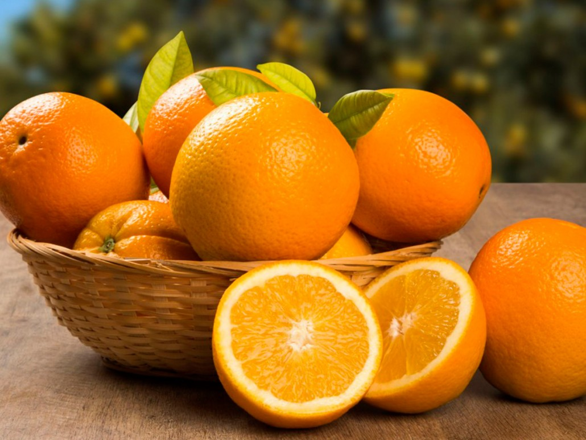

Orange incrementa las ventas de sus productos en los paises Eurpeos.
La empresa Orange ha tenido un gran incremento en todas sus ganacias, haciendose la empresa de cítricos mas grande de Europa.
¡ATENCION!
Clienes compran por montones los productos de alta calidad de Orange y se acaban rapidamente los productos cítricos.
 NARANJAS DE TEMPORADA. RECIÉN COGIDAS DEL ÁRBOL, TOTALMENTE NATURALES.
GASTOS DE ENVÍOS INCLUIDOS.
NARANJAS DE TEMPORADA. RECIÉN COGIDAS DEL ÁRBOL, TOTALMENTE NATURALES.
GASTOS DE ENVÍOS INCLUIDOS.
Al tratarse de productos perecederos la venta de naranjas solamente se llevará a cabo en campaña de maduración del producto. Naranjas de Palma Del Río, residuo cero. Del árbol a tu mesa en 24 horas. Garantizamos que el producto recibido no lleva más de 24 horas fuera del árbol.
CAJA NARANJAS SALUSTIANAS 10KG: 15,00€. CAJA NARANJAS SALUSTIANAS 15KG: 18,00€. CAJA NARANJAS SALUSTIANAS 20KG: 22,00€.
Normalmente solemos diferenciar entre naranjas de mesa y naranjas de zumo, pues bien, esta variedad nos cubre los dos campos ya que nos la podemos comer en gajos con cuchillo y obtener un rico y muy saludable zumo aprovechando todo su jugo.
Con esta iniciativa, queremos lograr que la naranja no llegue a las grandes industrias, poniendo a disposición el producto a todos los clientes de España desde el árbol a la puerta de casa, en 24 horas.

Naranjas

Somos una empresa de caracter familiar dedicada al sector agrario desde el año 1998, en especial a la recolección de naranjas.
normalmente la fruta recolectada, es comprada por grandes industrias las cuales no valoran la calidad del producto final y a unos precios infravalorados.
Empresa Orange S.A. distribuye en exclusiva, para el mercado nacional. Orange se impone de una garn amplia gama de diversos productos cítricos de gran calidad, fabricados en Europa. Todos los productos cítricos cumplen con todos los estándares de salubridada Europea garatizando la no
toxicidad de sus productos y de sus instalaciones. Disponen de la gama mas amplia y de mayor calidad del mercado Europeo. Asi mismo todos los productos estan certificados por la SGS en Europa.
 630884376, 649441434, 607712640
630884376, 649441434, 607712640